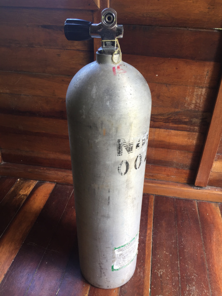
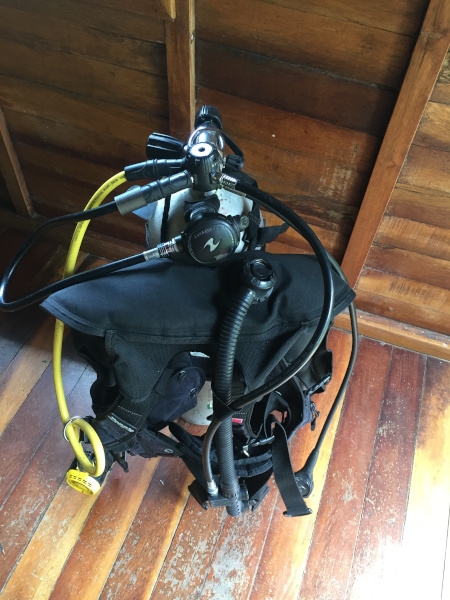
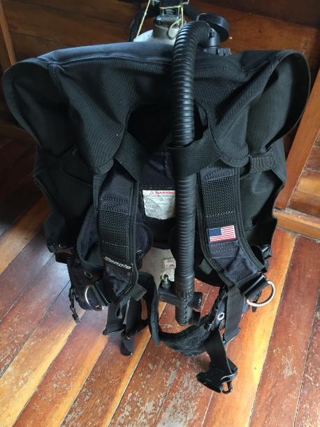
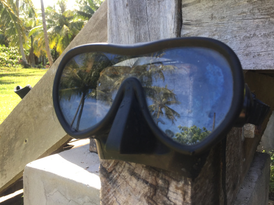
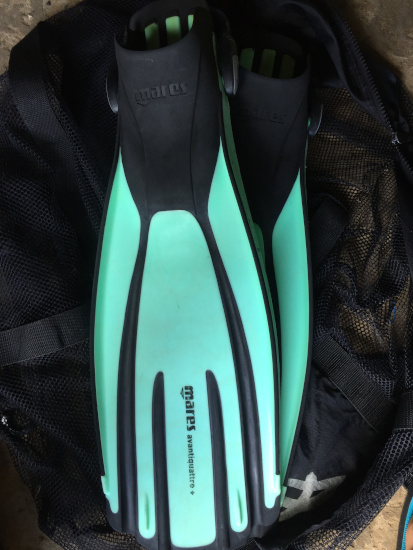
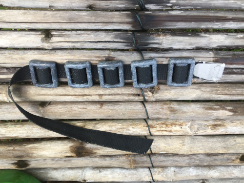
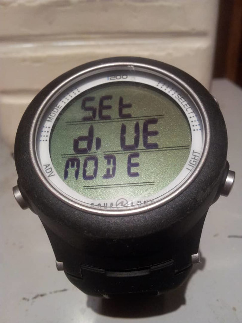
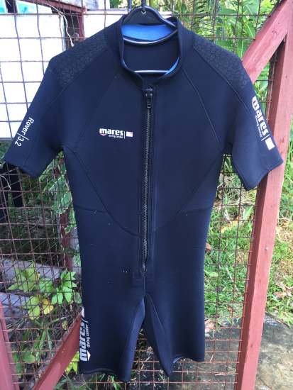

There are a lot of pieces of equipment needed to go scuba diving. Here are some of the essentials!
Tank
Made of either aluminium or steel holding approx 12 litres of air. The air inside is so dense its consistency is like jelly!
Regulator Set
A very complex piece of equipment, delivers air from the tank to the divers mouth.
Buoyancy Control Device (BCD)
A jacket like device that attaches to both the tank and regulator. Can be inflated to float at the surface or used underwater to control buoyancy.
Mask
Encasing the nose and eyes, creating a pocket of air allowing us to see!
Fins
Fins are like extensions to our feet allowing us to move easily through the water.
Weights
Pieces of lead usually between 1 and 5 Lbs. Weights can be attached to the weight belt or placed in special weight pockets in the BCD.
Dive Computer
Tells us very useful information, like depth and time and also about our decompression profile. Necessary, unless you are diving with tables.
Wetsuit
Due to the body losing heat faster in water, exposure protection, such as a wetsuit, is generally advisable.